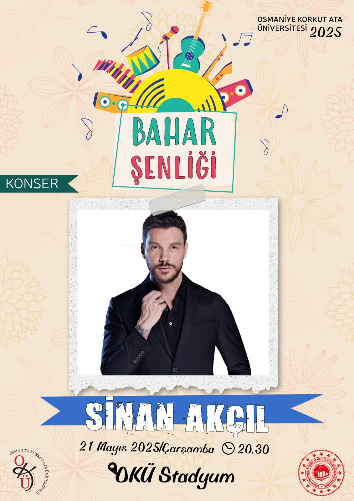
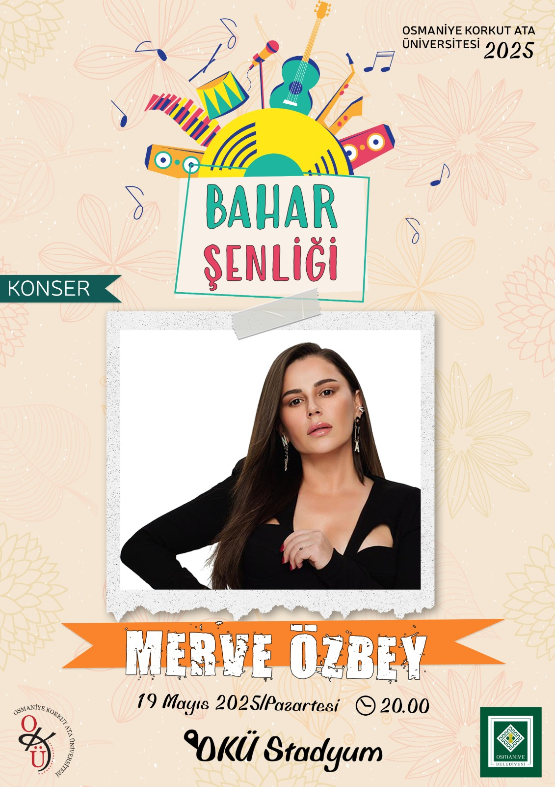

Osmaniye Korkut Ata Üniversitesi’nin gelenekselleşen bahar şenlikleri ruhunu en tepeye taşıyan anlardan biri, ünlü sanatçı Sinan Akçıl’ın muhteşem performansıydı. Kampüsün dinamik enerjisiyle Akçıl’ın liste başı şarkıları birleştiğinde, OKÜ tarihinin en kalabalık ve en coşkulu gecelerinden biri yaşandı.
Neden Unutulmazdı? Sinan Akçıl, sadece bir konser değil, tam bir görsel şov sundu. Binlerce öğrencinin tek bir ağızdan eşlik ettiği hit şarkıları, stadyumu dev bir koroya dönüştürdü. Sahne enerjisi, hayranlarıyla kurduğu samimi diyaloglar ve gecenin karanlığını aydınlatan telefon ışıklarıyla o gece, OKÜ’lü olmanın gururunu ve eğlencesini iliklerimize kadar hissettik.
Festival Ruhu Yeniden Canlanıyor! Sinan Akçıl’dan Sefo’ya, Melek Mosso’dan Haluk Levent’e uzanan bu devler ligi, OKÜ sahnelerinin ne kadar kaliteli organizasyonlara ev sahipliği yaptığının en büyük kanıtı. 2025 ve 2026 sezonlarında da bu çıtayı daha da yukarı taşımaya, yeni efsanelerle kampüsü sallamaya hazırız!

Osmaniye Korkut Ata Üniversitesi (OKÜ), 2025 yılı Bahar Şenlikleri'ni Türk pop müziğinin güçlü sesi Merve Özbey ile taçlandırdı. 19 Mayıs Atatürk'ü Anma, Gençlik ve Spor Bayramı ruhuna yakışır bir enerjiyle dolan OKÜ Stadyumu, tarihi gecelerinden birine daha tanıklık etti.
Neden Unutulmazdı? Merve Özbey, sadece sevilen şarkılarını seslendirmekle kalmadı; sahne performansıyla tüm kampüsü dev bir bayram kutlamasına davet etti. Gençlerin her bir şarkıya binlerce kişilik bir koro halinde eşlik etmesi, sınavlar öncesi tüm stresi unutturan muhteşem bir moral kaynağı oldu. Özbey'in eşsiz sesi ve samimiyetiyle birleşen gece, gökyüzünü aydınlatan ışık şovlarıyla unutulmaz bir anıya dönüştü.
Efsaneler Arasında Yerini Aldı! Daha önce Sinan Akçıl, Sefo ve Melek Mosso gibi dev isimleri ağırlayan OKÜ sahnesi, Merve Özbey’in bu unutulmaz konseriyle çıtayı bir kez daha zirveye taşıdı. Bu sahne, sadece müziğin değil; gençliğin, enerjinin ve kampüs birlikteliğinin en büyük simgesi olmaya devam ediyor.
